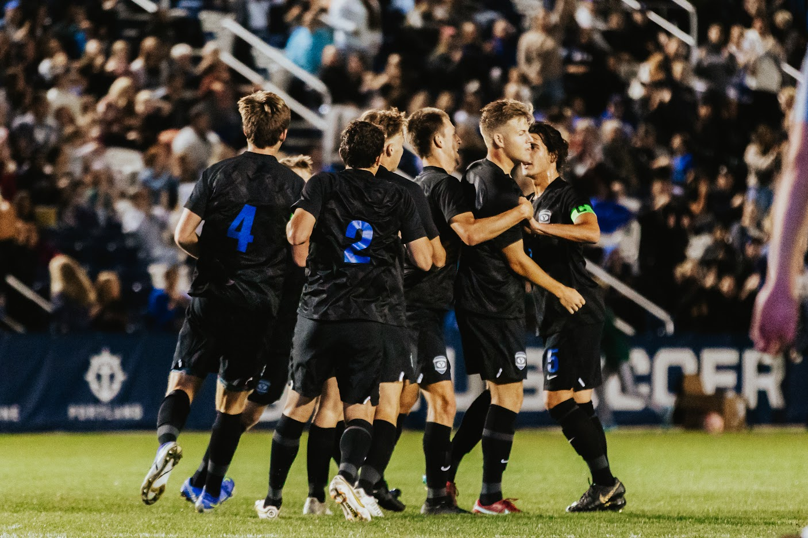
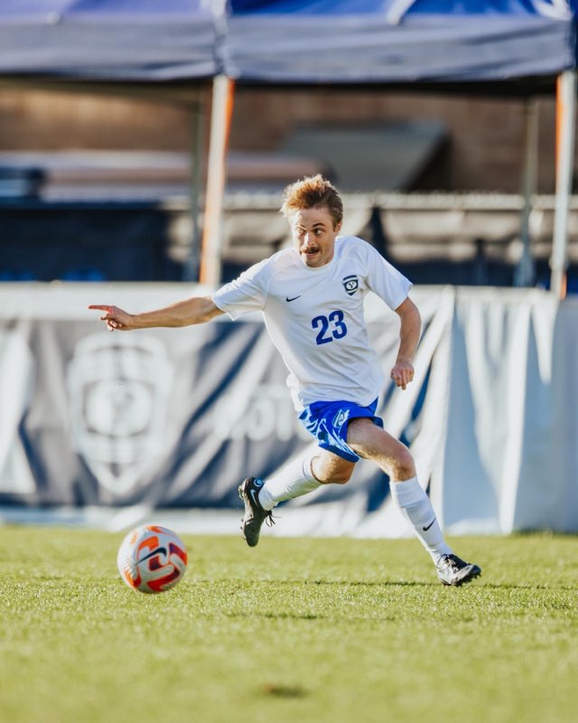

Journalism Class Projects
News Reporting
-

-
I have worked for the BYU Daily Universe for the past semester on the sports desk. I was assigned to cover BYU men's soccer as my beat throughout the semester.
The majority of my coverage for the team was game summaries and previews during their season this semester, that ended with a conference and a national championship.
Read More
-
Profile Story
This is a profile piece I did on Brandon Gilliam, the current BYU men's soccer head coach.
Read More
-
In Depth Story
This story is the history of the BYU men's soccer team. The link will be updated as soon as the story is published.
Read More
-

BYU men's soccer ends regular season as conference champions
BYU men's soccer ended its regular season on Saturday with a victory over the UVU Wolverines, making the Cougars conference champions for the fifth consecutive season.
Read More
-

BYU men's soccer ranks No. 1 in NIRSA rankings
In the first week of rankings by the National Intramural-Recreational Sports Association (NIRSA), BYU men's soccer was ranked No. 1in its region.
Read More
-

BYU men's soccer takes back to back wins over the weekend
BYU men's soccer beat both Weber State and Utah last weekend with scores of 6-0 and 5-1 respectively.
Read More
-
Beat History
Contact info:
Name: Tayler Bruin
Email: taylerbruin@gmail.com
Desk: Sports
Beat: BYU men's soccer
Beat Overview:
I primarily have done game recaps for the men's soccer team. They are an incredibly successful extramural team.
Major contacts for beat:
Brandon Gilliam (BYU men's soccer head coach): 801-735-7756
Tyler Staten (BYU men's soccer social media): 385-528-4043
Their social media is most active on Twitter, and it tends to be more accurate than their website:
BYU men's soccer twitter
If you need their stats, ask Tyler Staten to give you access to Ollie. It is the app they use for everything from team chat to stats.
Story Ideas:
Easy Ideas:
They will be doing a variety of training throughout the winter and summer that you could cover.
They occasionally do other types of events, such as training camps.
Next fall there will be a lot of games to do previews or recaps for.
Longer Form Ideas:
You could look into their alumni as they tend to have a lot of success in life.
You could do a championship recap since they have won nationals 11 times.
Digital Media Production
-
BYU Promotional Video
This video was created for my Communications 312 class. The purpose of the project
was to learn to record audio properly with a studio microphone setup, as well as
gather shots that matched to the script we were given to create a promotional video
for Brigham Young University.
watch here
-
Taki Video
This video was created for my Communications 312 class. The purpose of the project
was to learn to use shot composition correctly. This meant using a wide shot first.
Then going into a medium shot, and then three or more tight shots. After that sequence
we were to start over. There was a small visual effect I added which was the smoke on the Taki.
Finally, if you are wondering yes, we did actually microwave it and he actually ate the microwaved Taki.
2/10 would not recommend eating.
watch here